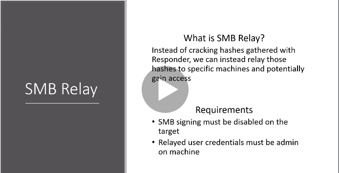

smb signing is a packet level protocol
so if its enabled sp when u try to relay credentials its gonna say hey u arne treallyl that person this packets not signed by u so u wont be able to come in
if its disabled so it doesnt check the authenticity
eg frank castle is admin on both machines so take his hash fdrom one machine and relay it to the other cant relay it back to the same machine
so in responder.conf turn of smb and http so that we are listneing and not respinding
and then boot up responder

now configure ntlmrelayx
it takes the relay passes it to a target file that u specify sm2support so that can incorporate anything with smb2
so after all this u basically get a sam(shadow) file of all the hashes of the local users
befire all his on both windows machines turn on network discovery